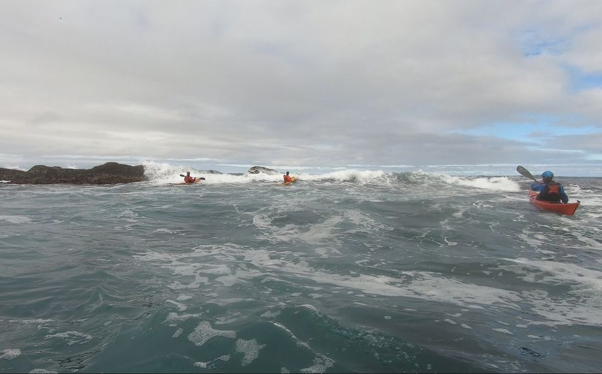
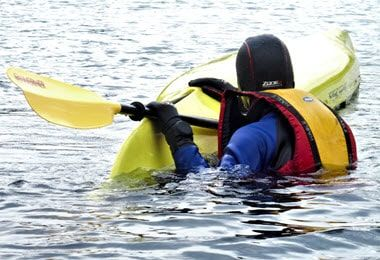
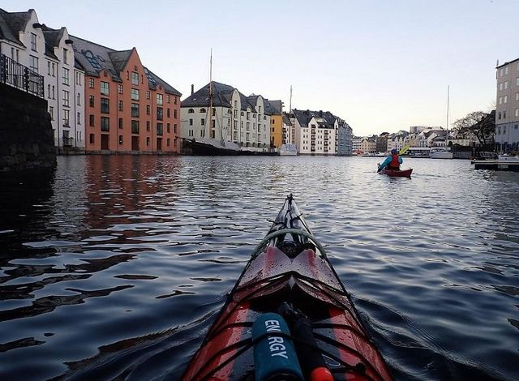
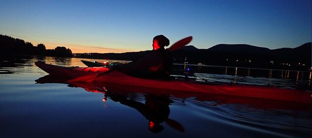

Blogg
Tips, turrapporter og historier fra livet på sjøen. Alt du trenger å vite om kajakk i Ålesund og Sunnmøre.

Siste innlegg

Padle med lundefugl: Kajakktur til fuglefjellet på Runde
Runde er et av Norges mest kjente fuglefjell — og fra kajakk opplever du lundefugl, havsule og havørn på nært hold. Her er alt du trenger å vite om padling ved Runde: beste tidspunkt, hvordan du kommer deg dit og hvordan turen foregår.
Les mer
Hoddevika og Stad: Padling på Norges villeste kystlinje
Stadlandet byr på noe av det råeste Norskekysten har: surfestranda i Hoddevika, det mektige Vestkapp og klosterøya Selja. Her er guiden til padling og brottpadling ved Stad — for deg som vil ha en opplevelse utenom det vanlige.
Les merKajakk i Ålesund: Den komplette guiden til padling på Sunnmøre
Alt du trenger å vite om kajakkpadling i Ålesund — de beste padleområdene, guidede kajakkturer, kajakkutleie, kurs og når på året du bør padle. Skrevet av lokal NPF-sertifisert kajakkguide.
Les mer
10 tips til deg som vil begynne med kajakk
Alt du trenger å vite før din første padletur. Fra utstyrsvalg til sikkerhetstips — her er mine beste råd til nybegynnere.
Les mer
Urban vinterpadling i Ålesund
En 12 km padletur gjennom Ålesunds havnebasseng og jugendbebyggelse midt på vinteren. Bypadling på sitt beste.
Les mer
Magisk mørkepadling i Ellingsøyfjorden
Når mørket senker seg over fjorden og stjernene tennes, begynner eventyret. En beretning fra en av Kajakkguidens mørkepadlingsturer.
Les mer
Kajakkurs — en trygg opplevelse
Hvorfor kajakkurs er den beste investering du kan gjøre for å oppleve sjøen trygt. Om sikkerhet, mestring og fellesskap.
Les mer